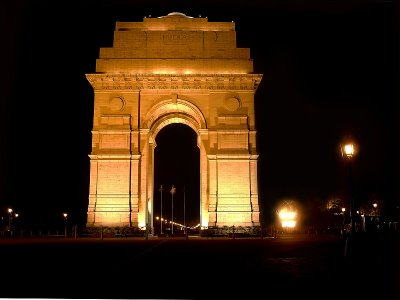
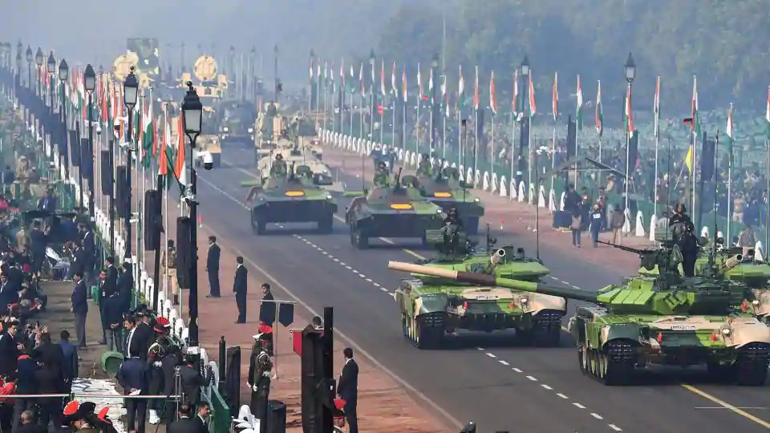
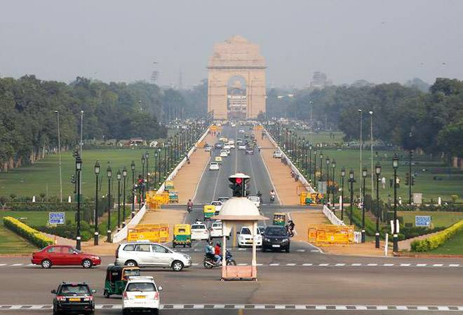
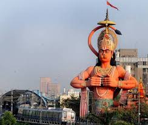
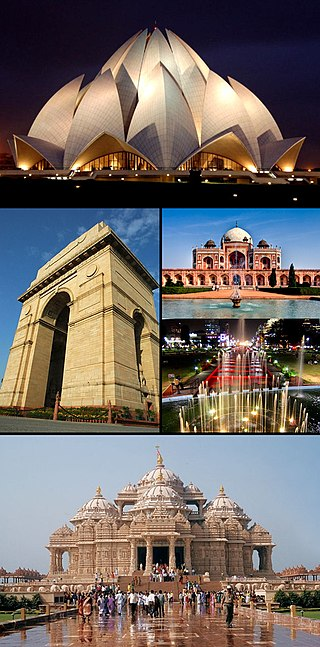

National Capital Territory of Delhi
Delhi , officially the National Capital Territory of Delhi (NCT), is a city and a union territory of India containing New Delhi, the capital of India. It is bordered by Haryana on three sides and by Uttar Pradesh to the east. The NCT covers an area of 1,484 square kilometres. According to the 2011 census, Delhi's city proper population was over 11 million, the second-highest in India after Mumbai, while the whole NCT's population was about 16.8 million.Delhi's urban area is now considered to extend beyond the NCT boundaries and include the neighboring satellite cities of Faridabad, Gurgaon, Ghaziabad and Noida in an area now called Central National Capital Region and had an estimated 2016 population of over 26 million people, making it the world's second-largest urban area according to United Nations.As of 2016, recent estimates of the metro economy of its urban area have ranked Delhi either the most or second-most productive metro area of India. Delhi is the second-wealthiest city in India after Mumbai, with a total private wealth of $450 billion and is home to 18 billionaires and 23,000 millionaires.

History
The States Reorganisation Act, 1956 created the Union Territory of Delhi from its predecessor, the Chief Commissioner's Province of Delhi.[1][2] The Constitution (Sixty-ninth Amendment) Act, 1991 declared the Union Territory of Delhi to be formally known as the National Capital Territory of Delhi.[3] The Act gave Delhi its own legislative assembly along Civil lines, though with limited powers.[3]
In December 2001, the Parliament of India building in New Delhi was attacked by armed militants, killing six security personnel.[67] India suspected Pakistan-based militant groups were behind the attack, which caused a major diplomatic crisis between the two countries.[68]There were further terrorist attacks in Delhi in October 2005 and September 2008, resulting in a total of 103 deaths

Geography
Delhi features a rare version of the humid subtropical climate (Köppen Cwa) bordering a hot semi-arid climate (Köppen BSh). The warm season lasts from 21 March to 15 June with an average daily high temperature above 39 °C (102 °F). The hottest day of the year is 22 May, with an average high of 40 °C (104 °F) and low of 28 °C (82 °F).[76] The cold season lasts from 26 November to 9 February with an average daily high temperature below 20 °C (68 °F). The coldest day of the year is 4 January, with an average low of 2 °C (36 °F) and high of 14 °C (57 °F).[76] In early March, the wind direction changes from north-westerly to south-westerly. From April to October the weather is hot. The monsoon arrives at the end of June, along with an increase in humidity.[77] The brief, mild winter starts in late November, peaks in January and heavy fog often occurs.[78]
Temperatures in Delhi usually range from 2 to 47 °C (35.6 to 116.6 °F), with the lowest and highest temperatures ever recorded being −2.2 and 48.4 °C (28.0 and 119.1 °F), respectively.[79] The annual mean temperature is 25 °C (77 °F); monthly mean temperatures range from 13 to 32 °C (55 to 90 °F). The highest temperature recorded in July was 45 °C (113 °F) in 1931.[80][81] The average annual rainfall is approximately 886 mm (34.9 in), most of which falls during the monsoon in July and August.[27] The average date of the advent of monsoon winds in Delhi is 29 June

Tourism
According to Euromonitor International, Delhi ranked as 28th-most visited city in the world and first in India by foreign visitors in 2015.[218]There are numerous tourist attractions in Delhi, both historic and modern. The three UNESCO World Heritage Sites in Delhi, Qutb Complex, Red Fort and Humayun's Tomb are among the finest examples of Indo-Islamic architecture.[219] Another prominent landmark of Delhi is India Gate, a 1931 built war memorial to soldiers of British Indian Army who died during First World War.[220] Delhi has several famous places of worship of various religions. One of the largest Hindu temple complexes in the world,[221] Akshardham is a major tourist attraction in the city. Other famous religious sites include Lal Mandir, Laxminarayan Temple, Gurudwara Bangla Sahib, Lotus Temple, Jama Masjid and ISKCON Temple. Delhi is also a hub for shopping of all kinds. Connaught Place, Chandni Chowk, Sarojini Nagar, Khan Market and Dilli Haat are some of the major retail markets in Delhi.[222] Major shopping malls include Select Citywalk, DLF Promenade, DLF Emporio, Metro Walk and Ansal Plaza.

Administration
The Government of the National Capital Territory of Delhi is the governing authority of the Indian national capital territory of Delhiand its 11 districts. It consists of an executive, led by the Lieutenant Governor of Delhi, a judiciary and a legislature. The present Legislative Assembly of Delhi is unicameral, consisting of 70 members of the legislative assembly (MLA).
The Supreme Court of India in Government of NCT of Delhi v. Union of India ruled that according to the Article 239AA of the Indian constitution, that although the government had to keep him/her informed of its decisions, Delhi's lieutenant governor did not have any independent decision-making powers and had to follow the "aid and advice" of the chief minister-led council of ministers of the Government of Delhi on matters which the Delhi Legislative Assembly could legislate on, viz., all items on the State List (items on which only state legislatures can legislate) and the Concurrent List (items on which both the Parliament of India and the state legislatures can legislate) barring 'police, 'public order' and 'land'.[1][2][3][4][5][6] The court added that on matters referred to him/her, the LG was bound to follow the orders of the president

Home Page